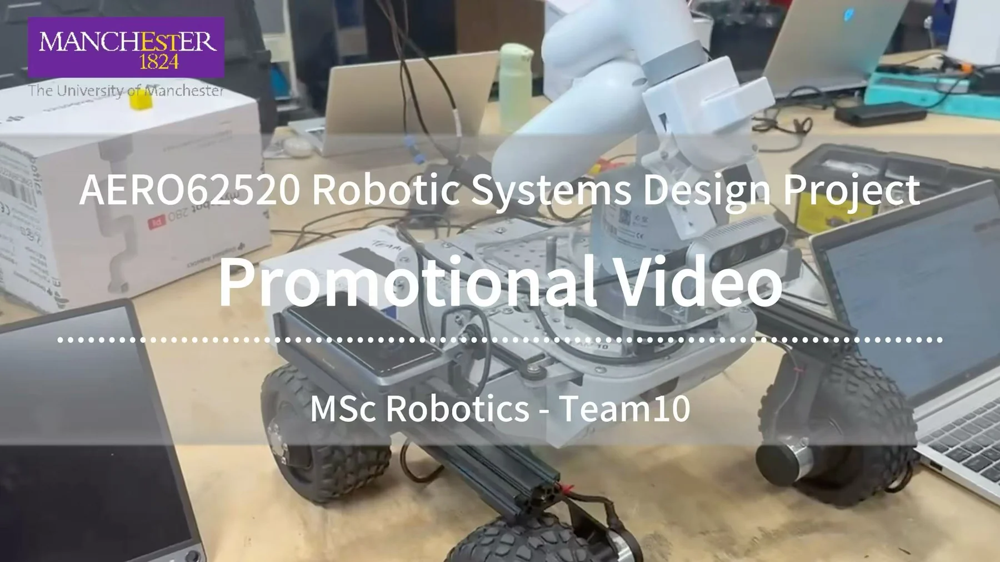
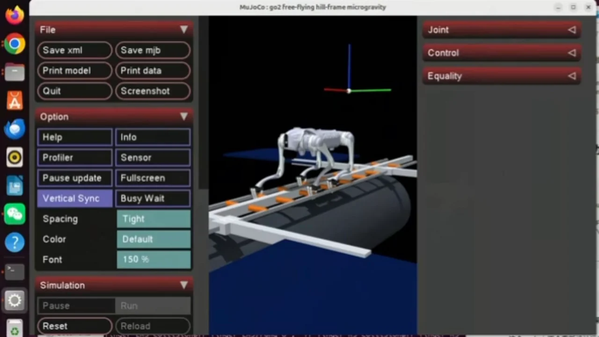
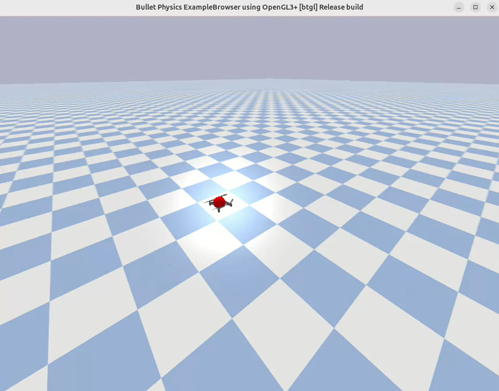
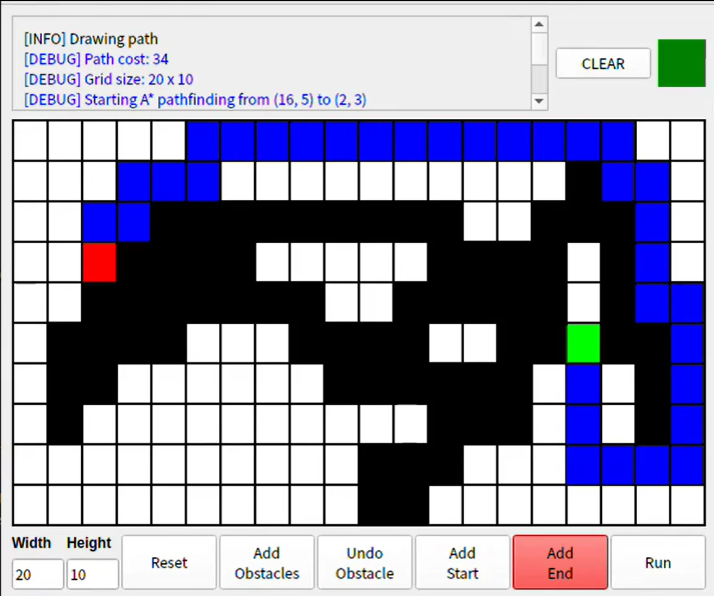
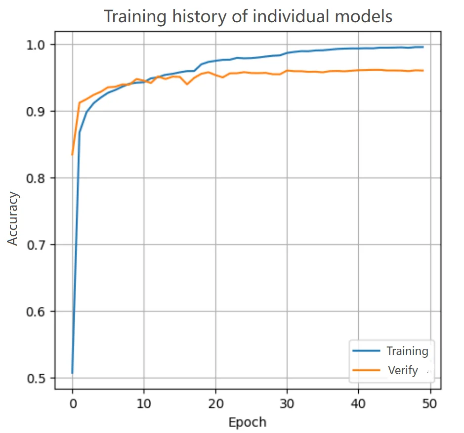
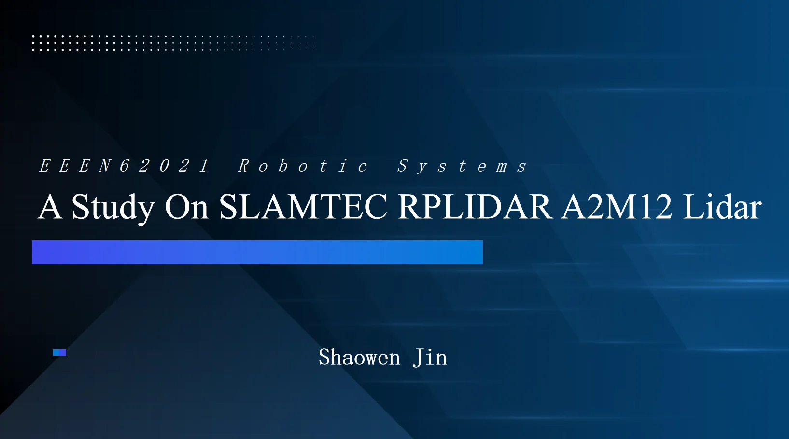
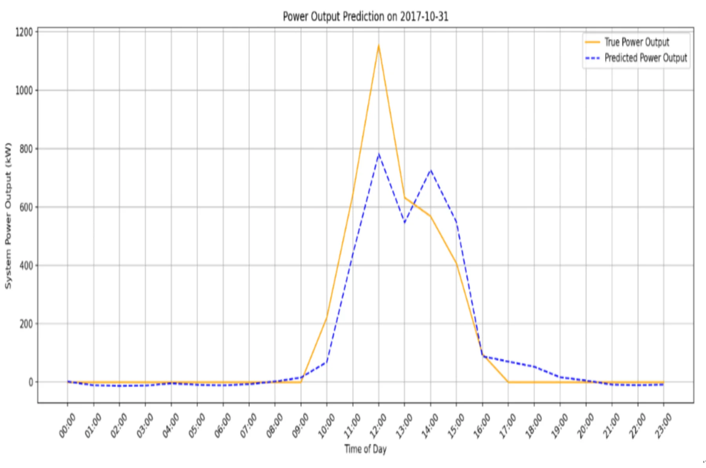
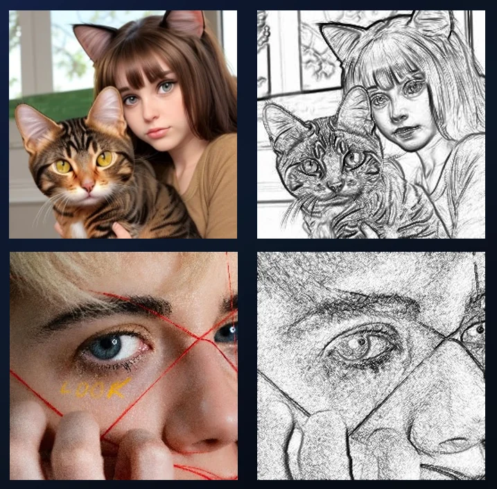
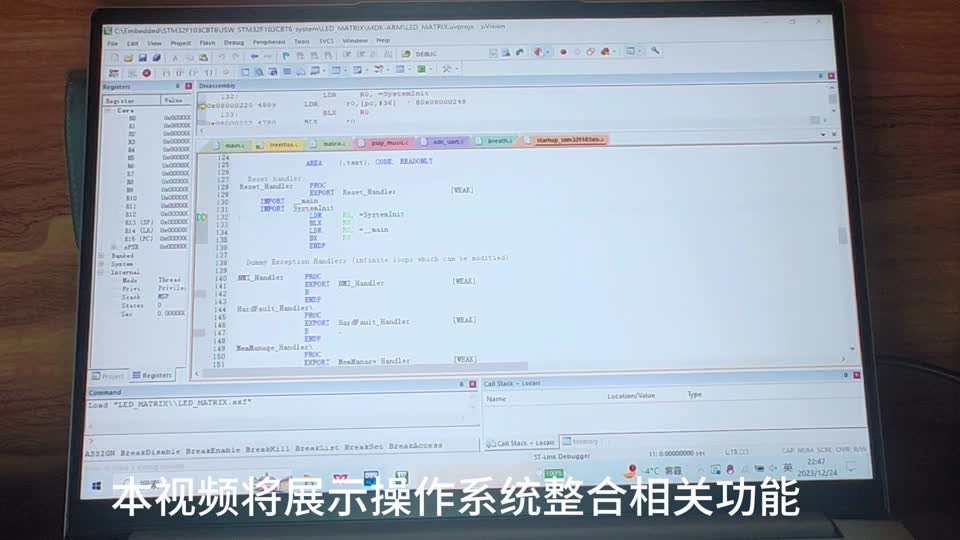

SHAOWEN JIN
SHAOWEN JINSelected Projects
A collection of experiments, implementations and team efforts across robotics, control, perception, machine learning and embedded systems. Organised by study stage, with my actual contributions at the centre.
Master's Projects
University of Manchester · Research, robot autonomy and system integration.

Team ProjectRobotic Systems Design Project · Autonomous Leo Rover
Led the navigation work package for a six-member autonomous mobile robot project, from SLAM and Nav2 integration to physical robot testing.

MSc DissertationInvestigating the Influence of Grasp Configuration on the Stability of a Multi-Limbed Robotic Platform in MuJoCo
A comparative study of grasp stability using a modified Unitree GO2 EDU PLUS in a microgravity-inspired structural environment.

Control TheoryFeedback Control & Path Tracking
PID feedback control with Pure Pursuit for mobile robot trajectory tracking.

Path PlanningA* Path Planning & Pure Pursuit
Collision-free global routes in a 2D occupancy grid, followed by trajectory tracking.

Computer VisionTraditional Vision vs Deep Learning
Compared residual CNNs against SIFT, K-Means, Bag-of-Words and SVM on benchmark datasets.

LiDAR & SLAMSLAMTEC RPLIDAR A2M12 Characterisation
Experimental analysis of sensing accuracy, resolution and real-world operating boundaries.
Undergraduate Projects
University of Jinan · Foundations in AI, computer vision, product thinking and embedded engineering.

Deep LearningPhotovoltaic Power Generation Prediction
A CNN–LSTM forecasting approach combining temporal features and dimensionality reduction.
E 校银 · AI Anti-Fraud Payment Platform
A three-person concept integrating campus cards, facial recognition and bank accounts.

Computer VisionReal vs AI-Generated Image Detection
Texture/edge-focused preprocessing and EfficientNetV2 for AI-generated image detection.

Embedded SystemsSTM32 Embedded System Design
From circuit and PCB design to embedded C firmware and RTOS multitasking.